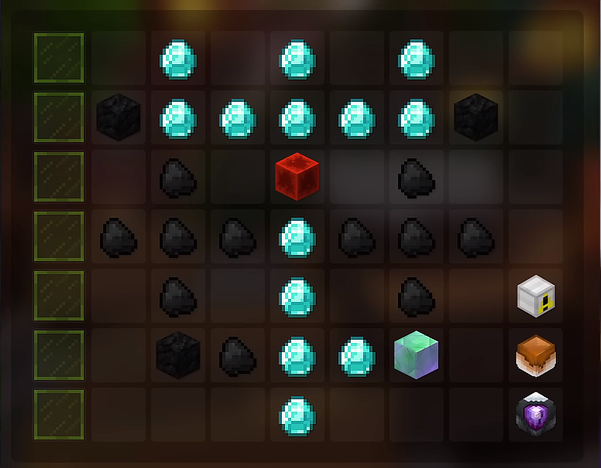

Powder Grinding is mining in the Crystal Hollows for chests, and gaining Powder to upgrade your Heart of the Mountain (HOTM) tree.
Hotm 7
Although 326 and Jasper give the same amount of Powder Buff, 20% for Mithril and Gemstone respectively, it is recommended to get a
mithril drill. When Gemstone mining, it is easy to get overflow Gemstone Powder, and harder to get overflow Mithril. That's why when/
Powder Mining, you want to get as much extra Mithril powder as you can, because its always possible to get more Gemstone Powder while
gemstone mining, but not possible to gain mithril while gemstone mining.
For Powder Mining, one pet that is eligible to use is a Rare Scatha. A Rare Scatha would be the best to use because of its ability to give up to a 25% higher
chance to get a treasure chest. Although the Epic Mithril Golem and Legendary Scatha do grant
abilities to gain 20% more Mithril and Gemstone Powder respectively, the abilities are bugged with Crystal Hollows chests, the exact
chests used to Powder Mine, rendering them useless until further progression. Although Scatha Pet is not required, it is recommended,
but not at all needed.
If a Scatha Pet is outside a budget, try to afford something that gives fortune, for example, a legendary Bee pet which is around 2.5 million.
Again, not needed.
There are two areas best for powder mining. Pre-Nerf, the best area was the Jungle, but since sludge prices have tanked, there are now
better areas. The overall best area for Powder Mining is the Precursor City, as it gives the highest chance to roll Powder as a loot drop, and
it also drops robot parts. There is always the Jungle, which makes the most money, but makes less powder than the Precursor City. (See Images 1 and 2 respectively)
1 Precursor City
2 Jungle
Post-Nerf, there have not been anyone new upgrades for Powder Grinding, try to keep a balance between mole and powder buff early on,
but prioritize Great Explorer, as it now is able to instantly open chests without having to pick a lock.
Once you hit Great Explorer 20, advance on the upgrades like normal.
Click here to see how to level hotm